7. Animation and Simulation
In the previous chapters, we discussed how to represent and manipulate virtual environments, and how to compute images from them. In this chapter, we will review the basic method used to represent and simulate the motion and deformation of objects in virtual environments.
7.1. Videos
We can think of a video as a function \(\mathbf{I}(t)\) that returns an image \(\mathbf{I}\) for any time \(t\). To treat videos in a practical manner, we need to discretize this function, just like we discretize images. A discretize video is a sequence of images \(\mathbf{I}_{t_i}\), often called frames. The frame rate of a video is the number of images reproduced per second, which is the inverse of the time between two consecutive frames. Just like any other discretization we saw, the higher the frame rate, the better the approximation of the original video, but the higher the storage and computational requirements. An example of a sequence of images and the corresponding video is shown in Figure 7.1 and Figure 7.2.

Figure 7.1. Example of video frames. Source:
Wikimedia.
{kind=link}

Figure 7.2. Example of video frames displayed one after the other. Source:
Wikimedia.
{kind=link}
When choosing the frame rate of a video, we need to consider the limitations of the human visual system. The human visual system is not able to perceive the difference between a continuous video and a sufficiently high frame rate video. The minimum frame rate at which this happens is called the flicker fusion threshold. The flicker fusion threshold is not a fixed value, but it depends on the content of the frames. For example, the flicker fusion threshold is higher for high contrast images than for low contrast ones. For normal viewing content, the flicker fusion threshold is roughly 60 frames per second. This is the frame rate used for HDTV and 4K video content, and is also the frame rate used by most computer monitors. You might have heard that many movies are shot at 24 frames per second, which seems significantly lower than the frame rate of HDTV. But in fact, movies are then projected at 72 frames per second by repeating each frame three times. This is done to avoid flicker which is a side effect of the low frame rate.
7.2. Keyframe Animation
In this book, we are mostly concerned about how to represent motion in three dimensional environments. We will start by considering motions that are represented explicitly. For lack of a better technical term, we will use the term animation to indicate such methods.
The basic premise of animation methods is to describe changes to a scene at the passing of time. In a way, we can think about animation methods as techniques that help us defining a function \(S(t)\) that returns a scene \(S\) for any given time \(t\). Any scene property may be altered with time, including all properties of cameras, shapes, materials, instances and environments. Both the representation of the time-varying properties and its computation and control differ significantly depending on the application. For example, a game engine handles the control of character motion in a different manner than the software used to produce computer animated movies. In this section, we focus on the basic ideas that can be combined to define complex animations.
The first aspect of animation is how to specify objects transformations through time. The most commonly-used methods interpolate transformations specified at fixed times throughout the timeline. This is sometimes called keyframe animation, where the key frames at the times at which the transformations are specifies. The simplest interpolation to consider is linear interpolation, where the two transformations \((\mathbf{F}_1, \mathbf{F}_2)\), defined at the end points of a time interval \([t_1, t_2]\), are interpolated for all times \(t\) within the interval. We can write this function as
One possibility to implement this interpolation is to linearly interpolate the coefficients of the frame matrices. This would be equivalent to writing \(\mathbf{F}(u) = (1 - u) \mathbf{F}_1 + u \mathbf{F}_2\). But done this way, we would get an interpolated frame that does not represent the intent of the keyframed transformations. For example, the linear interpolation of the coefficients of two rotations is not a rotation. If the two rotations are around the same axis, a better alternative is to interpolate the rotation angle. These cases are shown in Figure 7.3 and Figure 7.4.
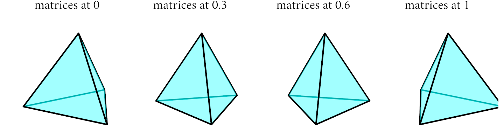
Figure 7.3. The linear interpolation of the coefficients of two rotation matrices is not a rotation. Notice how the shape of the object changes slightly in the two middle frames.
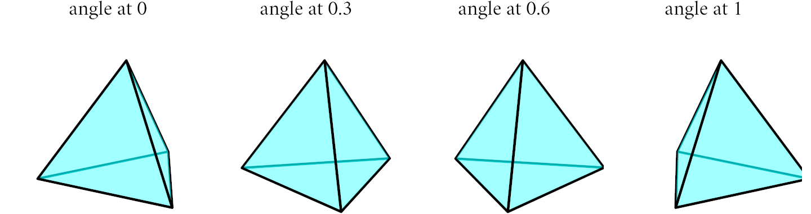
Figure 7.4. The linear interpolation of the angle of a rotation is a rotation.
The previous example show that the interpolation of transformations is not trivial. Together with computing the per-frame transformations, we also need to ensure that the speed and acceleration of the interpolated transformations, i.e. the first and second derivatives of \(\mathbf{F}(t)\), are consistent with the intent of the animation. In this introductory text, we will focus on computing correct per-frame transformations.
For basic transformations, such as translation, rotation and scaling, the simplest way to interpolate the transformations is to interpolate the transformation parameters, rather than the resulting frames. Using the notation defined in the previous chapters, we can write the interpolation of a translation as \(\mathbf{F}_{\mathbf{t}_1, \mathbf{t}_2}(u) = [\mathbf{I}, (1-u) \mathbf{t}_1 + u \mathbf{t}_2]\) and the interpolation of scaling transformations as \(\mathbf{F}_{\mathbf{s}_1, \mathbf{s}_2}(u) = [\text{diag}((1-u) \mathbf{s}_1 + u \mathbf{s}_2), \mathbf{0}]\). The interpolation of rotations is more complex. If we focus for now on interpolating rotations around a fixed axis \(\mathbf{a}\), then we can write the interpolated rotations as \(\mathbf{F}_{\theta_1, \theta_2}(u) = [\mathbf{R}_\mathbf{a}((1-u) \theta_1 + u \theta_2), \mathbf{0}]\), where \(\mathbf{R}_\mathbf{a}\) is the rotation matrix around the \(\mathbf{a}\) axis. For combined transformations, we can interpolate the individual components separately and then combine the interpolated components. This is illustrated in Figure 7.5.
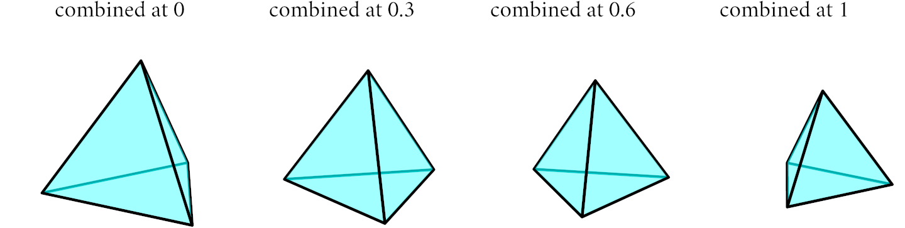
Figure 7.5. Interpolation of combined transformations.
While we discuss the simplest case of linear interpolation, the most common interpolation methods used in animation are splines. We have already seen splines in the context of curves and surfaces, and the same ideas can be applied to interpolate transformations, so we will not repeat them here.
7.3. Interpolation of Rotations
So far we have considered rotations around a fixed axis. We will now present the generalization to rotations around arbitrary axes, illustrated in Figure 7.6. To do so, we are going to introduce some notation for rotation that will help us write the interpolation of rotations in more concise manner.
In the previous chapters, we have seen that rotations can be represented as either \(3 \times 3\) rotation matrices \(\mathbf{R}\) or as axis-angle pairs \((\mathbf{a}, \theta)\). In order to manipulate these two representations, we introduce two functions that convert between them. The exponential map is a function that maps an axis-angle pair to a rotation matrix, while the logarithmic map is its inverse.
Given an axis \(\mathbf{a}\) and an angle \(\theta\), the exponential map \(\exp_m(\theta \mathbf{a})\) is the exponential \(\exp(\theta \mathbf{A}_\times)\) of the matrix \(\theta \mathbf{A}_\times\). The exponential \(\exp(\mathbf{M})\) of a matrix \(\mathbf{M}\) is a matrix defined by the Taylor series \(\exp(\mathbf{M}) = \sum\nolimits_{i=0}^\infty (\mathbf{M}^i / i!)\). The matrix \(\mathbf{A}_\times\) is the cross product matrix of the axis \(\mathbf{a}\), that is a matrix that multiplied by any vector \(\mathbf{b}\) gives the cross product with \(\mathbf{a}\) as \(\mathbf{A}_\times \mathbf{b} = \mathbf{a} \times \mathbf{b}\). The cross product matrix can be derived by substitution in the previous identity which results in
Using the Taylor series of matrix exponential and the properties of the cross product matrix, it can be shown that the exponential \(\exp(\theta \mathbf{A}_\times)\) evaluates to the Rodriguez formula for rotation matrices. This equality is the reason why we use matrix exponentiation to treat rotations. Putting it all together, we can write the exponential map as
The logarithmic map \(\log_m(\mathbf{R})\) of a rotation matrix is the inverse of the exponential map, namely the product of the axis \(\mathbf{a}\) and angle \(\theta\). We can compute the logarithmic map from the matrix logarithm \(\log(\mathbf{R})\) of the rotation matrix that can be written by inverting the Rodriguez formula. If we indicate as \(\text{Tr}(\mathbf{R}) = \sum R_{ii}\) the trace of the matrix \(\mathbf{R}\), then the logarithm of a rotation matrix equates to
To compute the logarithmic map \(\log_m(\mathbf{R})\), we need to extract the axis \(\mathbf{a}\) from it cross product matrix \(\mathbf{a}_\times\) in the previous equation, that can be done by inspection of the cross product matrix coefficients. Putting it all together, we can write the logarithmic map as
We can now go back to original problem of interpolating rotations. If we consider two rotations \(\mathbf{R}_1\) and \(\mathbf{R}_2\), we can write the rotation that transforms \(\mathbf{R}_1\) to \(\mathbf{R}_2\) by solving the equation \(\mathbf{R}_2 = \mathbf{R}_{1 \rightarrow 2} \mathbf{R}_1\), that gives the rotation matrix \(\mathbf{R}_{1 \rightarrow 2} = \mathbf{R}_2 \mathbf{R}_1^{-1}\). The logarithmic map of this matrix gives us the rotation axis \(\mathbf{a}_{1 \rightarrow 2}\) and angle \(\theta_{1 \rightarrow 2}\) that bring \(\mathbf{R}_1\) to \(\mathbf{R}_2\) as \(\log_m(\mathbf{R}_{1 \rightarrow 2}) = \theta_{1 \rightarrow 2} \mathbf{a}_{1 \rightarrow 2}\). We can compute the intermediate rotations by taking the same axis \(\mathbf{a}_{1 \rightarrow 2}\) but with the intermediate angles \(\theta(u) = u \theta_{1 \rightarrow 2}\). The final interpolated rotations are the product of the exponential map of the axis-angle rotation and the rotation \(\mathbf{R}_1\) written as \(\mathbf{R}(u) = \exp_m(\theta(u) \mathbf{a}_{1 \rightarrow 2}) \mathbf{R}_1\). Note that we do not necessarily need to compute the axis \(\mathbf{a}_{1 \rightarrow 2}\), since we can just use the corresponding cross product matrix, that allows us to use just matrix exponential and logarithm to interpolate rotations. The computed interpolation has constant speed and use the same axis for all intermediate rotations, which are desired properties when interpolating rotations. The interpolated rotations, illustrated in Figure 7.6, can be written as
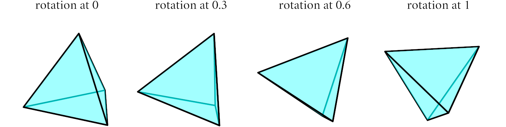
Figure 7.6. Interpolation of rotations using the exponential map.
7.4. Quaternions (*)
The procedure we introduced before is complex since we switch between two representations during interpolation. We can write the same interpolation with a more suitable representation of rotations. The standard tool used in graphics to animate rotations is the quaternion. In general, the use of quaternions is preferred if we rarely need to use rotation matrices, otherwise the use of exponential and logarithmic map is probably easier. Quaternions are themselves quite complex, so we restrict here their discussion to the notions needed for graphics.
A quaternion \(\mathbf{q} \in \mathbb{H}\) is represented by two components, a scalar \(w \in \mathbb{R}\) and a vector \(\mathbf{v} \in \mathbb{R}^3\), that we write as \(\mathbf{q} = (w, \mathbf{v})\). Quaternions are linear quantities with the sum and scaling operations written component-wise as
For our purposes, the most relevant operation on quaternions is their product
From this definition it is easy to show that the product of two quaternions is not commutative, but it is associative. Each quaternion has a conjugate \(\mathbf{q}^*\), and the product of a quaternion and its conjugate is a scalar equal to the square of the quaternion norm, that we write as
Quaternions are used to represent rotations in three dimensions. More precisely, a quaternion of norm one, known as unit quaternion, represents a rotation. And in fact, any rotation can be represented as a unit quaternion. We can write the quaternion corresponding to the rotation around an axis \(\mathbf{a}\) by an angle \(\theta\) as
The inverse transformation, from a quaternion to an axis-angle rotation, is given by
The rotation of a three-dimensional point \(\mathbf{p}\) by a unit quaternion \(\mathbf{q}\) is given by the product \(\mathbf{q} \hat{\mathbf{p}} \mathbf{q}^*\), where \(\hat{\mathbf{p}}\) is the quaternion \(\hat{\mathbf{p}} = (0, \mathbf{p})\). This is easily shown by substitution with the definition of quaternion product, that gives us the Rodrigues formula for rotating a vector around an axis.
Alternatively, we can write the rotation as a matrix-vector product \(\mathbf{R}(\mathbf{q}) \mathbf{p}\), where the rotation matrix can be derived by the same procedure we use to write the matrix from the axis-angle representation. The resulting matrix is given by
A benefit of the quaternion representation is that the composition of rotations is equivalent to the product of quaternions. We can write this as \(\mathbf{q}_1 \circ \mathbf{q}_2 = \mathbf{q}_1 \mathbf{q}_2\). From this product we can get the combined rotation axis and angle without further computation. The equivalence between quaternion product and rotation composition is easily shown by substitution since \((\mathbf{q}_1 \mathbf{q}_2) \hat{\mathbf{u}} (\mathbf{q}_1 \mathbf{q}_2)^{-1} = \mathbf{q}_1 \mathbf{q}_2 \hat{\mathbf{u}} \mathbf{q}_2^{-1} \mathbf{q}_1^{-1} = \mathbf{q}_1 (\mathbf{q}_2 \hat{\mathbf{u}} \mathbf{q}_2^{-1}) \mathbf{q}_1^{-1}\).
To compute the interpolation of two rotations, we need to define two further operations on unit quaternions, namely their exponential and logarithm. Let us first give their definition that can be derived from the Taylor series of the exponential. We write the quaternion exponential and logarithm as
The quaternion power is defined with respect to the quaternion exponential and logarithm as \(\mathbf{q}^u = \exp(u \log(\mathbf{q}))\).
The quaternion exponential and logarithm are related to the exponential and logarithmic map of rotations. Let us now consider the exponential of the quaternion \((0, \tfrac{\theta}{2} \mathbf{a})\). From the previous definition, it is easy to see that this is just the quaternion corresponding the rotation around the axis \(\mathbf{a}\) by the angle \(\theta\). This in turn means that we can write the exponential map of a rotation easily as just
Let us now consider the special case of the logarithm of a unit quaternion representing a rotation. In this case, the quaternion norm is one and the \(w\) component is the cosine of half the angle of rotation. With these observations, we can simplify the logarithm of a unit quaternion as \(( 0, \tfrac{\theta}{2} \mathbf{a})\). From this observation, it is easy to show that the logarithmic map of a unit quaternion can be written as
From the definition of the logarithmic map and the quaternion power, it follows that raising a unit quaternion to the power \(u\) is equivalent to rotating around the same axis by the angle \(u \theta\) since
We can now go back to the problem of interpolating rotations. We will build a solution in the same manner we did for the matrix representation. If we consider two rotations \(\mathbf{q}_1\) and \(\mathbf{q}_2\), we can write the rotation that transforms \(\mathbf{q}_1\) to \(\mathbf{q}_2\) as \(\mathbf{q}_{1 \rightarrow 2} = \mathbf{q}_2 \mathbf{q}_1^{-1}\). This gives us the axis-angle representation of the rotation. To rotate the axis by the angle \(u \theta_{1 \rightarrow 2}\), we can raise the quaternion \(\mathbf{q}_{1 \rightarrow 2}\) to the power \(u\) and multiply back by \(\mathbf{q}_1\). Putting it all together we get
The interpolated rotations using quaternions, illustrated in Figure 7.7, has the same structure as the ones we derived for the matrix representation, but they are simpler to compute since we do not need to necessarily switch between representations. And just like for the matrix representation, the interpolated rotations have constant speed and use the same axis for all intermediate rotations, which are desired properties when interpolating rotations.
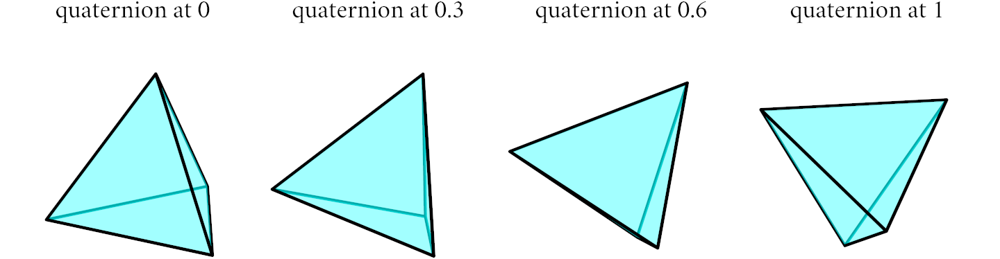
Figure 7.7. Interpolation of rotations using quaternions.
The same interpolation can be derived using a geometric construction, and observing the interpolation of rotations is equivalent to the interpolation of points onto the unit sphere in four dimensions since unit quaternion have norm one. The geometric proof is less straightforward, but it provides a simpler, but equivalent, formula called spherical linear interpolation, or SLERP, that is given by
In the previous equation, the angle \(\theta_{1 \rightarrow 2}\) can be computed as the arc cosine of the dot product of the two quaternions as \(\theta_{1 \rightarrow 2} = \arccos(\mathbf{q}_1 \cdot \mathbf{q}_2)\), where the dot product is just taken component-wise.
Some authors suggest that a simpler interpolation can be obtained by using the linear interpolation of the quaternion components, and normalizing them. But this interpolation does not have constant speed, and it is not exactly equivalent to the interpolation of rotations. Still, we can write that, at least for small angles,
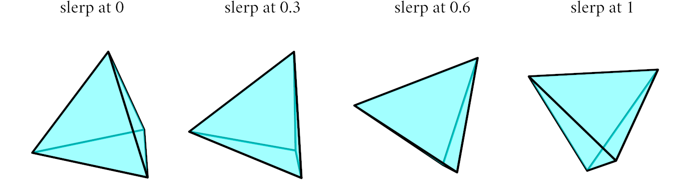
Figure 7.8. Interpolation of rotations using SLERP.
7.5. Transformation Hierarchies
With the ability to interpolate transformations, we can now define animations of rigid objects. To animate whole scenes, we need to define how to animate each object, and how those animations are related. For example, if we have a cup and a spoon on a table, then if we move the table we would like to see both cup and spoon move at the same time. One way to do this is to manually synchronize those animations, which becomes quickly impractical for complex environments.
The most practical manner in which to animate groups of objects is to define transformation hierarchies. A transformation hierarchy is a tree structure where each node is associated with a transformation. The transformation of a node is defined relative to the transformation of its parent node. The root of the tree is associated with the world coordinate system, and the transformation of each node is defined relative to the coordinate system of the parent in three. This is illustrated in Figure 7.9. We can write the transformation of a node \(i\) in world coordinates \(\mathbf{F}_i\) recursively as the product of the world-space transformation of its parent node \(\mathbf{F}_p\) and the transformation of node \(i\) relative to its parent \(\mathbf{F}_i^{\text{local}}\) as \(\mathbf{F}_i = \mathbf{F}_{p} \mathbf{F}_i^{\text{local}}\). A more explicit way to write this is the indicate as \(P_i\) the nodes along a path from \(i\) to the root. The world transformation of a node \(i\) is then given by
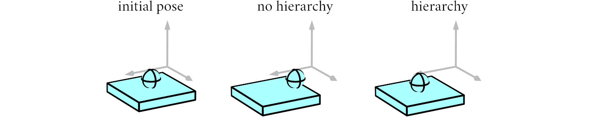
Figure 7.9. Example of a transformation of two object with and without a transformation hierarchy. Here we only move the lower box. The upper sphere moves with it if it is a transform child of the lower box.
While there are more complex ways to define relationship between transformations, transformations hierarchies are the most commonly-used one and are found in all animation systems.
A second case where transformation hierarchies are useful is when we want to animate a character. In this case, we define a hierarchy of transformations that is associated with the character skeleton. The root of the hierarchy is associated with the root of the skeleton, and each node is associated with a bone. For characters made of rigid parts, such as robots, these transformation hierarchies are sufficient to describe the motion of the character.
7.6. Blend Shapes
For surfaces that model organic characters, such as humans or animals, animation amounts to describing the changes to the surface with time, i.e. its deformation. Over the years, a variety of techniques have been proposed to better approximate realistic motion.
The simplest of these methods is to define a set of meshes, called blend shapes, that have the same topology but different vertex positions. In these meshes, the character it typically in a different pose. The animation is then defined by interpolating the positions of the vertices of the meshes. This is illustrated in Figure 7.10. To model complex animation, this method is generally implemented by a defining a set of weights \(w_i(t)\), one for each blend shape \(\mathcal{M}_i\), that are animated trough time. If we write as \(\mathbf{p}_{i,j}\) the positions of the vertices of the \(\mathcal{M}_i\) blend shape, then the interpolated positions of the vertices of the animated mesh are given by
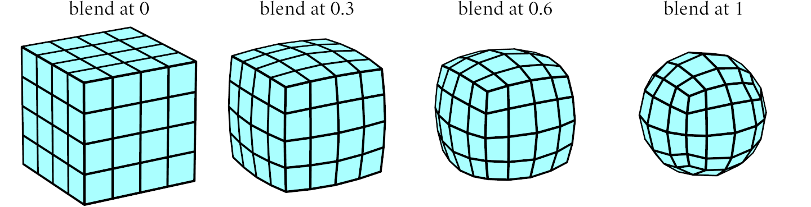
Figure 7.10. Example of linear interpolation of blend shapes.
The method of blend shape has the advantage of being easy to control since the interpolated shape can be easily modeled by adding additional blend shapes. At the same time, it is very inefficient exactly because it needs a large number of blend shapes. For example, think of a character that is walking and talking at the same time. In this case, we would need to define a blend shape for each possible combination of walking and talking. This can be ameliorated by having blend shapes that only affect part of the mesh, but it is still not sufficient to model complex animation.
7.7. Linear Blend Skinning
More efficient methods for complex deformations rely on computing the deformed surface, as opposed to storing it like blend shapes do. Once again, there are a plethora of techniques introduced in the literature and used in practice that depend on the deformation we are modeling and how we control them. Discussing them all is beyond the scope of this book. Instead, we will just introduce the basic ideas used to develop these methods.
The most commonly used model for character deformation is skinning. In this model, the character motion is controlled by a set of transformations \(\mathbf{F}_i\), called "bones", that are grouped hierarchically to form a character "skeleton". The deformation of the surface follows the movements of the nearby bones. We model the relation between vertices and bones by associating a weight \(w_{i,j}\) at each pair formed by a vertex \(\mathbf{p}_j\) and a bone \(\mathbf{F}_i\). There are a few variants of this model, depending on how the transformed vertices are combined. In linear blend skinning, the deformed position of a vertex \(\mathbf{p}_j\) is given by the weighted average of the position of that vertex as it is transformed by each bone \(\mathbf{F}_i\). This is illustrated in Figure 7.11. To compute the deformation we specify a rest pose, where the character is in a neutral pose and all the bones are in their default positions. We indicate with \(\bar{\mathbf{p}}_j\) the vertex positions in the rest pose and with \(\bar{\mathbf{F}}_i\) the bone transformations in the rest pose. The deformation of the character is then given by
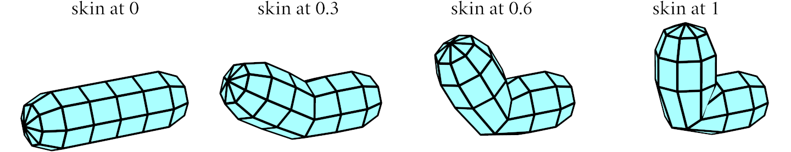
Figure 7.11. Example of linear blend skinning.
Linear blend skinning is a simple method that exhibits several artifacts. These are related to the fact that instead of interpolating vertex transformations, it simply blends their matrix coefficients. This is easily shown by considering the deformation of a vertex \(\mathbf{p}_j\) written with respect to the rest pose as \((\sum\nolimits_i w_{i,j} \mathbf{F}_i(t) \bar{\mathbf{F}}^{-1}_i) \bar{\mathbf{p}}_j\), that makes it clear that the deformation is a linear combination of the matrix coefficeints of the bone transformations. We have already seen how this is an issue when interpolating rotations, and similar issues arise when interpolating translations and rotations together, transformations that are required for bone placement. The most visible resulting artifacts often appear as loss of volumes, as illustrated in Figure 7.12.
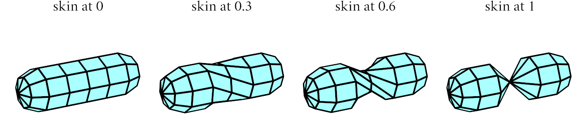
Figure 7.12. Loss of volume in linear blend skinning.
7.8. Dual Quaternion Skinning (*)
Of the many methods proposed to improve the quality of linear blend skinning, the most common approach is to use dual quaternions to represent bone transformations. Dual quaternions are a representation of rigid transformations that is equivalent to their matrix representation, but that interpolates better, in the same manner as quaternions interpolate rotations better than matrices. In particular, dual quaternions are used to interpolate translations and rotations together, while quaternions are used to interpolate rotations alone. Just like quaternions, we will focus here on the notions needed for graphics.
Dual quaternions are quaternions whose components are dual numbers. We will present dual quaternions here without introducing dual numbers for brevity, and instead write dual quaternions \(\dot{\mathbf{q}}\) as pairs of quaternions \(\dot{\mathbf{q}} = (\mathbf{q}_1, \mathbf{q}_2)\). Dual quaternions are linear quantities, with the sum and scaling operations written component-wise as
On dual quaternion, we define a product and conjugate as
The norm of a dual quaternion is the square root of the product of the dual quaternion and its conjugate. Differently from quaternions, the norm of a dual quaternion is a dual number, with a scalar and a dual part. We write the norm as
The use of dual quaternions is justified by the fact that unit dual quaternions represent rigid body transformation, i.e. transformation composed of a rotation followed by a translation. In fact, all rigid body transformations can be represented as unit dual quaternions. From the previous formula, we can see that the norm of a unit dual quaternion is one when \(\| \mathbf{q}_1 \| = 1\) and \(\mathbf{q}_1 \mathbf{q}_2 = 0\).
Unit dual quaternions transform points in a manner similar to quaternions. For a given point \(\mathbf{p}\), we construct the dual quaternion \(\dot{\mathbf{p}} = \left((1, \mathbf{0}), (0, \mathbf{p})\right)\). The transformed point \(\mathbf{p}'\) is then given by the product \(\dot{\mathbf{q}} \dot{\mathbf{p}} \bar{\dot{\mathbf{q}}}^*\), where \(\bar{\dot{\mathbf{q}}}^* = (\mathbf{q}_1^*,-\mathbf{q}_2^*)\).
The advantage of using dual quaternions is that the combination of two rigid transformations \(\dot{\mathbf{q}}_1 \circ \dot{\mathbf{q}}_2\) is equivalent to the product of the corresponding dual quaternions, written as \(\dot{\mathbf{q}}_1 \circ \dot{\mathbf{q}}_2 = \dot{\mathbf{q}}_1 \dot{\mathbf{q}}_2\). We can now construct a dual quaternion for any given rigid transformation. We start by considering rotations represented as a unit quaternion \(\mathbf{q}\). The corresponding unit dual quaternion is given by \(\dot{\mathbf{q}} = (\mathbf{q}, (0, \mathbf{0}))\). We can verify by substitution that this extension maintains all the properties of unit quaternions for rotations. More surprisingly, we use dual quaternions to represent translations as well. Given a translation vector \(\mathbf{t}\), we can write the unit dual quaternion \(\dot{\mathbf{t}} = \left((1, \mathbf{0}), (0, \tfrac{1}{2} \mathbf{t})\right)\) that represent a translation by \(\mathbf{t}\). We can verify that this quaternion represents a translation by substituting this equation in the definition of the transformed point. A rigid body motion \(\dot{\mathbf{r}}\) that is the combination of a rotation and a translation is then written as the product of a rotation and a a translation as
When used for interpolation, dual quaternions have for rigid transformations the same properties that quaternions have for rotations, in that they produce interpolated transformations that are minimal, with respect to the rotation angle and translation distance, and of constant speed. Our particular interest though is their use to compute weighted averages of rigid transformations. Computing these precisely involves the use of complex arithmetic that is often too expensive for practical use. Instead, we can use a simple weighted average that is accurate enough for most cases, and is written as
We can apply dual quaternions to skinning by using the interpolated dual quaternion to transformed the skinned point, instead of using matrices as is done in linear blend skinning. This method is called dual quaternions skinning. If we write as \(\bar{\mathbf{p}}_j\) the vertex position in the rest pose, we can compute the deformed position of that vertex by transforming it by the dual quaternion \(\dot{\mathbf{r}}(u)\) obtained as the average of the bone transformations \(\dot{\mathbf{r}}_i(u)\), scaled by the inverse of their rest pose transform \(\dot{\bar{\mathbf{r}}}_i\), weighted by the vertex-bine weights \(w_{i,j}\). Putting it all together, we can write dual quaternion skinning as
Figure 7.13 shows an example of dual quaternion skinning. For simple motions, both skinning methods behave similarly.
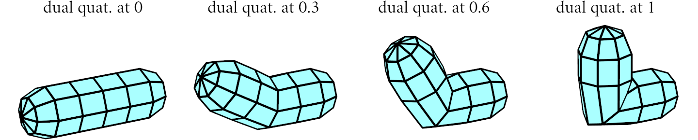
Figure 7.13. Example of dual quaternion skinning.
The advantage of dual quaternions is that they ameliorate the problems of linear blend skinning. Figure 7.14 shows how dual quaternions skinning reduces the volume loss of linear blend skinning. In the end though, all of these deformations are just approximations of the actual motion of the character. The most accurate way to model character deformation is to simulate the motion of muscles and skin. This is a very complex problem that is still an active area of research.
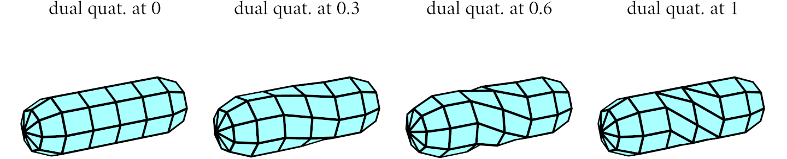
Figure 7.14. Dual quaternion skinning ameliorates the volume loss issues of linear blend skinning.
7.9. Introduction to Simulation
The motions we considered so far are changes to the scenes controlled by a relatively small number of parameters. For natural phenomena, such as water, fire, smoke, or cloth, we need to define animations that cannot be represented in this manner efficiently. Instead, we use simulation where we define the equations that govern the motion of the objects in the scene, and then compute their motion by solving these equations.
Depending on the material that we want to simulate, the equations of motions are quite different. For this reason, we often talk about using different solvers to solve the equations of motion. In graphics, we are often interested in simulating the motion of particles, for special effects such as explosions, rigid objects, to simulate large environments, deformable objects, such as cloth and hair, and fluids, such as water and smoke.
In many graphics applications, each of these phenomena is simulated separately, and then combined to produce the final animation. But doing so often leads to artifacts, since the motion of the different phenomena is not affected by the others. Instead, it is often better to simulate all phenomena together, so that motions are coupled. But these kinds of simulators are still an area of active research and no solutions work well for all cases.
Another consideration worth discussing is the difference between graphics simulators and simulators used in other fields, such as physics and engineering. In general, while all simulators solve the same equations of motion, they have different trade-offs when it comes to accuracy, speed, and the size of the environments they try to simulate. Graphics applications tend to favor simulation speed, environments size, and numerical stability at the expense of accuracy. This is because the goal of graphics simulators is to produce animations that look believable, but do not need to be necessarily physically accurate. Also, graphics simulators focus a lot of effort on handling collisions between objects, a notoriously hard problem that is not as much of a concern in many other fields.
Given the variety of possible simulators and the complexity of the equations they solve, we will present here a very simple simulator for particle motion while trying to highlight the main ideas behind simulation in general.
7.10. Particle Simulation
The simplest simulation we can consider is the motion of particles. Let us consider a particle with position \(\mathbf{p}(t)\). From the particle position, we can derive the particle velocity \(\mathbf{v}(t)\) and acceleration \(\mathbf{a}(t)\) as the first and second derivative of the position with respect to time, written as
The motion of the particle is determined by the forces acting on it, expressed as a force vector \(\mathbf{f}\), and the particle mass \(m\). In the general case, the forces acting on a particle may depend on the particle's position, the particle's velocity, and time, so we will write the force as \(\mathbf{f}(\mathbf{p}, \mathbf{v}, t)\). The acceleration of the particle is then given by Newton's second law as
In a simulation, we know the forces acting on the particle, and the initial position and velocity of the particle. From these, we want to compute the particle position at each subsequent time. This is an initial value problem that we can solve by integrating the equations of motion. We can write the initial value problem as a second-order differential equation as
An alternative way to write the same equation is to write the velocity as the first derivative of the position, and then write the initial value problem as a system of two first-order differential equations as
We can now solve the initial value problem by integrating the equations of motion. The resulting motion \(\mathbf{p}(t)\) is a continuous function of time. To illustrate this idea, let us consider the motion of a particle under the influence of gravity. Gravity generates a constant acceleration of \(g = 9,8 m s^{-2}\) towards the bottom of a scene. The corresponding force is \(\mathbf{f}_g = (0, -g, 0)\). The resulting motion can be computed analytically as \(\mathbf{p}(t) = \mathbf{p}^0 + \mathbf{v}^0 t + \frac{1}{2} \mathbf{f}_g t^2/m\). Another example is to consider a particle under the influence of a spring. Springs pull particles towards their rest position, and the force acting on the particle is proportional to the distance from the rest position and the spring stiffness. If we assume for simplicity that the spring rest position is at the origin, and we write as \(k\) the spring stiffness, then the force acting on the particle is \(\mathbf{f}(\mathbf{p}, \mathbf{v}, t) = -k \mathbf{p}\). The resulting motion is an oscillatory motion around the origin, that can be computed analytically as \(\mathbf{p}(t) = \mathbf{p}^0 \cos(\omega t) + \mathbf{v}^0 \sin(\omega t) / \omega\) with \(\omega = \sqrt{k /m}\). Figure 7.15 plots the \(y\) coordinate of the particle motion over time, for these two cases.
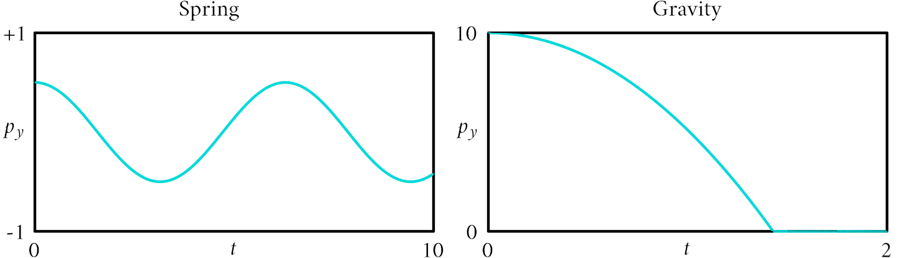
Figure 7.15. Examples of particle motion under a spring (left) and gravity (right). The plots show the \(y\) coordinate of the particle position over time.
Just like we did for all other continuous quantities, we need to discretize particle motions to represent them digitally. The simplest way to do so is to store samples of the motion at regular intervals of time, for example one for each frame, as shown in Figure 7.16. We will use the notation \(\mathbf{p}(t^k) = \mathbf{p}^k\) to indicate the position of the particle at the \(k\)-th frame, corresponding to the time \(t^k = k \Delta t\), where \(\Delta t\) is the time between frames.
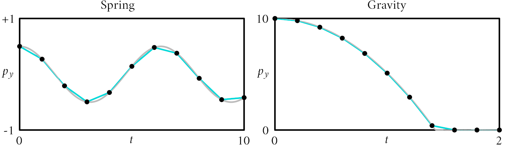
Figure 7.16. Discretization of the motion of a particle, compared to their continuous counterpart.
Initial value problems are well studied in the literature, and several methods have been proposed to solve them. In graphics applications, the most commonly used methods are in the family of Euler methods. These methods are generally considered to be inaccurate, but they are fast and easy to implement. Their use in graphics is mostly due to the fact that they can be adapted easily to handle collisions, as we will see later, which are much harder to integrate if higher order integration methods. The simplest variant of the Euler method is derived by approximating the derivatives in the equations of motion with finite differences, as
From these equations, we derive the explicit Euler method that is given by
The explicit Euler method works well for low-stiffness springs, but becomes unstable for high-enough spring stiffness, as shown in Figure 7.17.
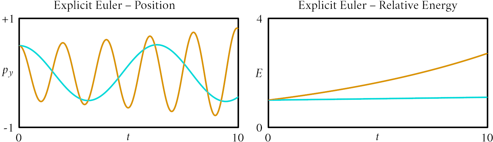
Figure 7.17. Integration of a particle under the influence of a spring using the explicit Euler method, for a low-stiffness (blue) and a high-stiffness (orange) spring. Explicit Euler is not stable for high-stiffness systems.
A second variant of the Euler method, called semi-implicit Euler method, is derived by using the velocity at the next time step to approximate the derivative of the position, as
The semi-implicit variant is more stable than the explicit one, while remaining easy to implement, as shown in Figure 7.18. In practice, it is the most often used in graphics applications.
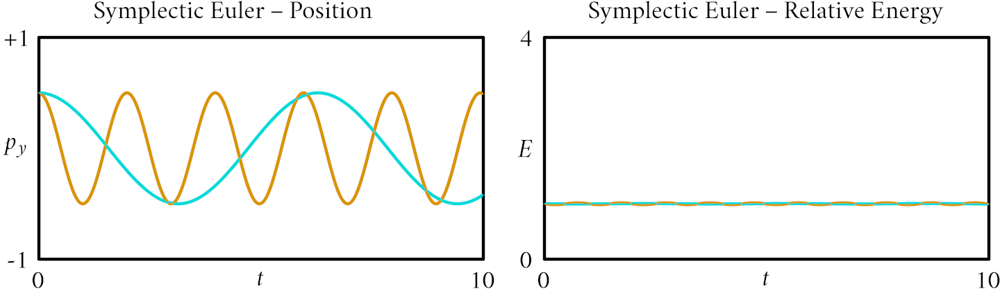
Figure 7.18. Integration of a particle under the influence of a spring using the semi-implicit Euler method, for a low-stiffness (blue) and a high-stiffness (orange) spring. Semi-implicit Euler is stable for relatively high-stiffness systems.
A final variant of the Euler method, called implicit Euler method, is derived by using the position and velocity at the next time step to compute the force, as
The implicit variant is the most numerically stable of the ones we considered, but it is also significantly more complex to implement, since it requires the solution of a non-linear system of equations at each time step in the general case. Also, it looses energy, thus slowing particles down, as shown in Figure 7.19. This is generally accepted in graphics since in the real-world objects slow down due to friction. Implicit Euler methods are sometimes used in graphics in challenging simulation where numerical stability is hard to achieve with other methods.
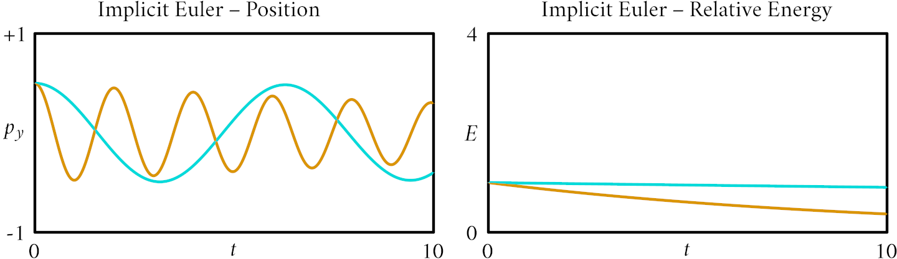
Figure 7.19. Integration of a particle under the influence of a spring using the implicit Euler method, for a low-stiffness (blue) and a high-stiffness (orange) spring. Implicit Euler is always stable, at the price of loosing energy.
7.11. Mass-Spring Systems
A mass-spring system is a set of particles connected by springs. The motion of the particles is determined by the spring forces, as well as any external force such as gravity. Mass-spring systems are used to simulate a variety of phenomena, such as cloth, hair, and deformable objects. These systems are inaccurate approximations of the actual motion of the objects they simulate, but they are fast and easy to implement, and they are often sufficient for graphics applications.
We consider springs that connect pairs of particles, say \(\mathbf{p}_i\) and \(\mathbf{p}_j\). The force that a spring applies on a particle \(\mathbf{p}_i\) is proportional to the spring stiffness \(k_s\) scaled by the difference between the spring rest length \(l_s\) and its current length \(\| \mathbf{p}_i - \mathbf{p}_j \|\), and is parallel to the vector connecting the particles that form the string. The force that the spring applies on the particle \(\mathbf{p}_j\) is the same but in the opposite direction. We can write the spring force as
We model a mass-spring system as a collection of \(n\) particles with positions \(\mathbf{p}_i(t)\) and masses \(m_i\). The motion of the particles is determined by a set of \(m\) springs that connects pairs of particles \((i, j)\) with springs of rest length \(l_s\) and stiffness \(k_s\).
We also consider external forces \(\mathbf{f}_i^{\text{ext}}\) acting on the particles. In particular, we consider gravity, that is a constant force \(\mathbf{f}_i^{\text{ext}} = m_i \mathbf{g}\), where \(\mathbf{g}\) is the acceleration due to gravity that is a constant vector with magnitude \(9.8\ \text{m}/\text{s}^2\) and direction pointing downwards. If we write as \(S_i\) the set of particles \(j\) connected to particle \(i\) by a spring, then the force acting on the particle \(i\) is given by
From these equation, we can sketch the implementation of a mass-spring solver that uses the semi-implicit Euler method. In general, the accuracy of the solver is small for large enough \(\Delta t\), so we perform \(n_s\) sub-steps for each frame, where each subset taking \(\Delta t / n_s\) time. In the implementation sketch below, the particles states is comprised of the particles positions \(\mathbf{p}_i\), velocities \(\mathbf{v}_i\) and masses \(m_i\), while the springs are defined by the indices of the particles they connect \((i_s,j_s)\), the springs' rest lengths \(l_s\) and stiffness \(k_s\). For simplicity of notation, we indicate the particle state at the next time with primed letters. The solver is then a straightforward implementation of the semi-implicit Euler method, using \(n_s\) sub-steps per frame, that can be written as
A useful example of mass-print systems is the modeling of cloth. In this case, the particles are arranged in a quad grid, and each particle is connected to its neighbors by springs. To ensure that the cloth does not bend freely, we also connect each particle to its diagonal neighbors. This is illustrated in Figure 7.20.
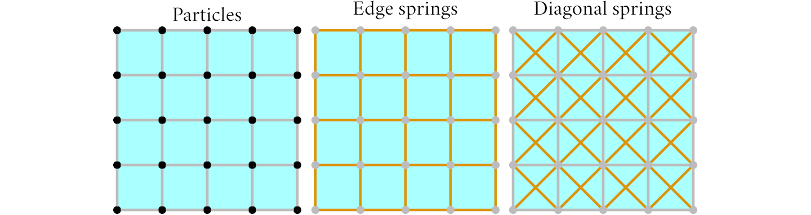
Figure 7.20. Mass-spring system for cloth simulation.
Figure 7.21 shows the result of simulating a hanging cloth under gravity using the mass-spring solver we presented.
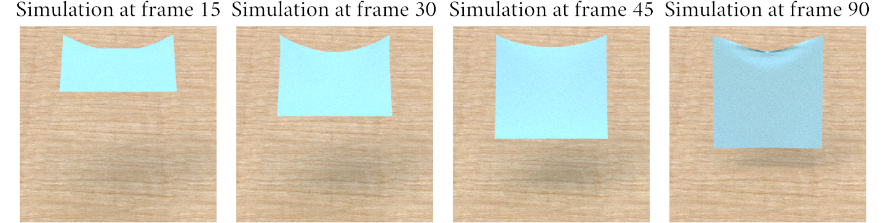
Figure 7.21. Simulation of cloth using a mass-spring system.
7.12. Collision Handling
One of the most important, but also complex, aspects of simulation is handling collisions. Collisions are complex since they are hard to detect in a robust manner, and, once detected, they are hard to handle since the forces they produce are often large and can lead to instabilities. In fact, collisions are still an active area of research, and there is no general solution that works for all cases. In this section, we will present some ideas common to many solutions used in practice.
Most collision handling algorithms are split into two phases. In the first phase, called collision detection, we find collisions between objects. In the second phase, called collision response, we handle the collisions by updating the kinematics or dynamics of the bodies involved in the collision.
Collision detections methods are roughly grouped into two categories, as shown in Figure 7.22. Discrete collision detection methods detect collisions at discrete time steps, typically at the beginning or end of each frame. These methods detect collisions by checking whether objects overlap at the time the method is executed. These methods are simpler to implement, but may miss collisions between objects that are moving fast. Continuous collision detection methods detect collisions by following the trajectory of objects' to determine the time at which a collision happens during the frame. These methods are significantly harder to implement, and more expensive to evaluate, but they are more accurate and do not miss collisions regardless of the speed of the objects.
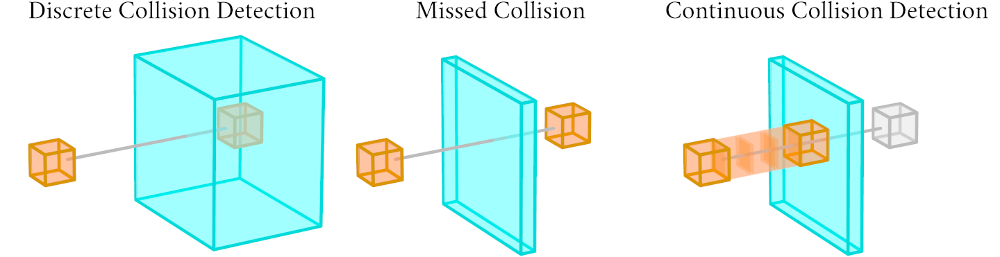
Figure 7.22. Discrete and continuous collision detection.
In the context of solvers for particle systems, collisions can be detected between particles and static objects, such as the ground, or between particles and other particles. In the first case, shown in Figure 7.23, a simple discrete collision is to check whether a particle is inside a static mesh. This can be done by checking whether a ray starting at the particle position and pointing in any directions intersects the mesh an odd number of times. A continuous collision detection between particles and static meshes can be implemented by assuming that during a frame the particle is in free flight and travels in straight lines. In this case, we can check whether the particle trajectory intersects the mesh by tracing a ray from the particle position in the direction of the particle velocity. If the ray intersects the mesh, we can then check whether the intersection point is closer to the particle position than the distance the particle travels during the frame. If so, we have a collision.
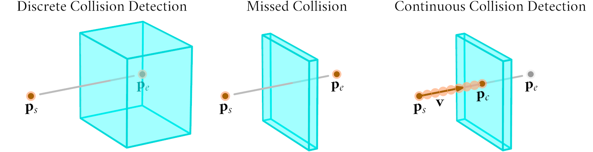
Figure 7.23. Collision detection between particles and static objects.
For the case of collisions between particles, shown in Figure 7.24, we can treat particles as small spheres. A discrete collision detection method checks for particle collisions by determining whether two spheres are at a distance smaller than the sum of their radii. A continuous collision detection method is more involved and would require to trace the trajectories of the particles and check whether they intersect in flight.
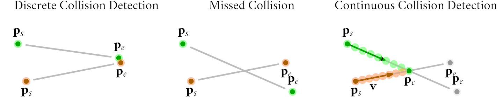
Figure 7.24. Collision detection between moving particles.
Collision response methods are roughly grouped into three categories, depending on how the dynamics of the affected objects is changed. Force-based methods add repulsive forces to the objects involved in the collision, to push them away from each other. These methods are hard to implement since choosing the right forces is not easy in general. Constraint-based methods add constraints to the objects involved in the collision, to prevent them from penetrating each other. The objects are them subject to impulses that change their velocities, computed from the constraints. These methods are easier to implement, but they require care since they can lead to instabilities. Kinematics methods change the objects' positions and velocities directly to prevent them from penetrating each other, without attempting to correctly modify the simulated dynamics. These methods are the easiest to implement, but they are the least accurate and often lead to surprising behaviors that do not match our intuition since they do not preserve dynamics' quantities.
To this day, collision response is still an active area of research, and a lot more of an art than a science, since no solution works well for all cases. All graphics simulators use heuristics to handle collisions, and the resulting behavior is often tailored to the specific application they are used for.
To show an example of collision detection and response for particles, we consider the case of particle collisions with static meshes. We assume that particles are small spheres with radius \(r_i\), and that the static mesh can be raytraced efficiently using an acceleration structure. We can detect collisions between particles \(\mathbf{p}_i\) and static meshes \(\mathcal{M}_j\) by tracing a ray from the original particle position \(\mathbf{p}_i\) in the direction of the predicted particle position \(\mathbf{p}'_i\) at the end of the frame. We detect a collision if the ray intersects the mesh before the end of the frame. We can then respond to the collision by moving the particle position \(\mathbf{p}'_i\) to just outside the intersection point \(\mathbf{p}_c\), at a distance \(r_i + \epsilon\) along the surface normal \(\mathbf{n}_c\) at the collision point \(\mathbf{p}_c\), by setting \(\mathbf{p}'_i := \mathbf{p}_c + (r_i + \epsilon_c)\ \mathbf{n}_c\). We can also adjust the particle velocity \(\mathbf{v}'_i\) by projecting it onto the collision normal as \(\mathbf{v}_p := (\mathbf{v}'_i \cdot \mathbf{n}_c)\ \mathbf{n}_c\), and then reflecting the particle velocity with respect to the collision normal as \(\mathbf{v}'_i := k_{b\perp} (\mathbf{v}'_i - \mathbf{v}^p_{ij}) - k_{b\parallel} \mathbf{v}^p_{ij}\), where \(k_{b\perp}\) and \(k_{b\parallel}\) are the restitution coefficients for the perpendicular and parallel components of the velocity. Putting together both steps, we can sketch a possible implementation of collision handling as
The last component of many particle simulators is to add a damping term to the particle velocities. Damping is a force that is proportional to the particle velocity, and is used to dissipate energy from the system. We can write the dumping force as \(\mathbf{f}_i^\text{damp} = -k_d m_i \mathbf{v}_i\), where \(k_d\) is the damping coefficient. This is useful to prevent the simulation from becoming unstable, and to make the motion of the particles look more natural. To be clear, this is a very imprecise approximation of the actual physical phenomena that dissipate energy from a system, but it is sufficient for many graphics applications. Finally, to ensure that particles eventually stop moving, small velocities are clamped to zero. Putting it all together, we can sketch a possible implementation of damping as
The final simulator is then obtained by combining the mass-spring solver with collision handling and damping, and is sketched in the code that follows. A few frames of the resulting simulation are shown in Figure 7.25.
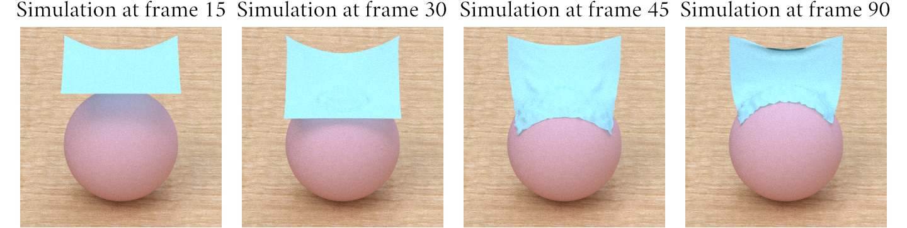
Figure 7.25. Simulation of cloth with a mass-spring system and collisions.